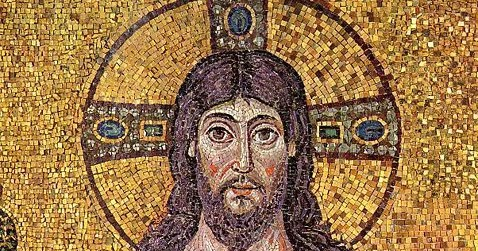

A arte bizantina surgiu no século IV com a fundação de Constantinopla, sendo influenciada pela cultura romana, grega e oriental.
Fortemente ligada ao cristianismo, era usada para transmitir mensagens religiosas e decorar igrejas.
Uso de cores vibrantes, fundo dourado, figuras frontais e ausência de profundidade.
Feitos com pequenas tesselas de vidro, pedra ou ouro, criando brilho e durabilidade.
A arte bizantina prioriza o simbólico e espiritual, não o realismo.
Influenciou a arte europeia e permanece relevante até hoje como patrimônio cultural.
